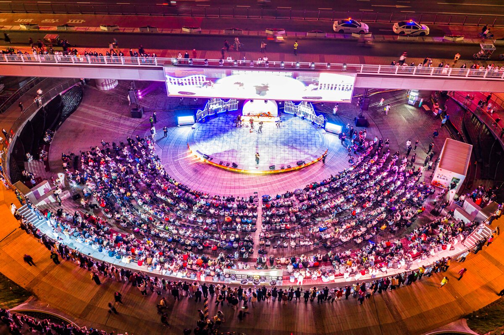
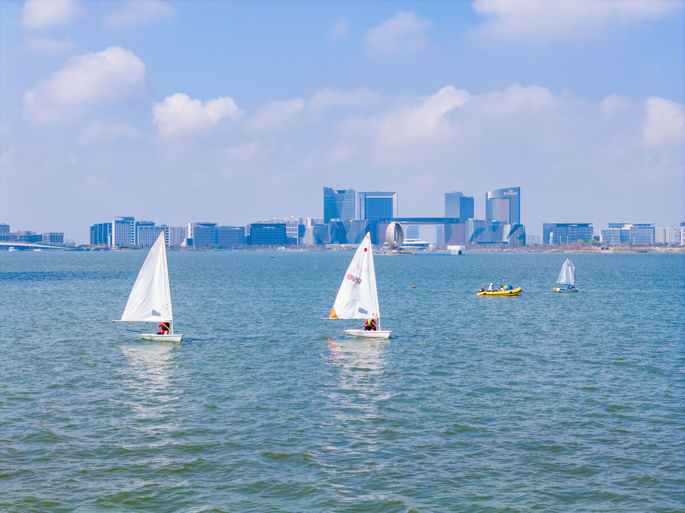
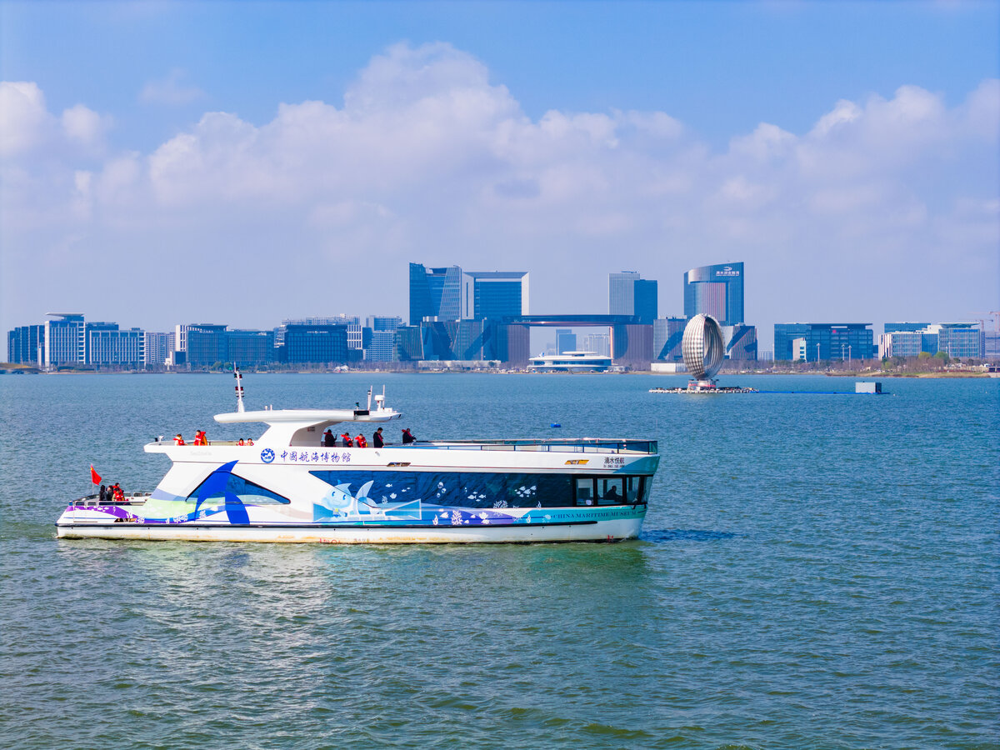

临港管委会 摄
说起来挺丢人的，在上海活了三十年，直到上周末才第一次认真逛滴水湖。以前总觉得那地方远——临港新城嘛，听着就像还在建设的大工地。结果地铁16号线一站站坐过去，从龙阳路出发，五十分钟，竟比我每次去虹桥还快。
湖很大，大到我骑了两个小时才绕了半圈。但风是甜的，阳光是暖的，路边不时有野餐垫铺在草地上，有人骑车、有人散步、有人发呆。就是那种——你知道吗——在上海市区已经很难找到的、没那么紧、没那么挤的松弛感。
— 01 —
一条藏不住的骑行线
「棒棒糖」40公里环湖骑行
滴水湖本身就是个圆形。官方修了一条40公里的骑行道，绕湖一圈，配上一捺伸向海边的小半岛，远看像根棒棒糖。
我是上午十点从一号码头出发的。一路沿西岸往北，先是湖畔的芦苇荡，然后是东岸的城市天际线，最后绕回南岛的洲际酒店。中途在一尺花园歇了半小时，喝了杯冰美式。
📌 实用信息卡
路线起点：滴水湖一号码头
总里程：约40公里（含棒棒糖小半岛）
租车点：一号码头、南岛、临港大道地铁站旁均有共享单车/租赁车
最佳时段：工作日9-11点 / 周末16点后（避开人流高峰）
⏰ 暗知识：东岸靠近金融湾那段有一段地下通道，没信号，别慌，100米就出来
— 02 —
湖边的咖啡，真的能让人坐一下午
两家值得专程绕路的小店
第一家是一尺花园，在滴水湖西岸。说是"花园"一点不夸张——一千五百平米的空间，六千多本书，还有七个景观区打造的玻璃森林。我拍的那张帆就是从他家二楼露台往外扫的。
第二家是Manner 一号码头店。开在工业风的码头建筑里，户外座位直接对着湖面。点杯燕麦拿铁，吹着湖风看帆船从湖心漂过来——我在这儿坐了俩小时，愣是没舍得走。

滴水湖湖心帆船 | 临港管委会 摄
📌 实用信息卡 · 一尺花园
地址：滴水湖西岸湖滨路（骑行道旁）
营业时间：10:00 - 21:00
人均：80-120元（含饮品和甜点）
💡 暗知识：二楼临窗位置和露台最抢手，周末11点后基本坐满；如果是下午来，试试直接问能不能在吧台点单打包，坐到户外台阶上，视野一样好，还省了位
📌 实用信息卡 · Manner 一号码头店
地址：滴水湖一号码头工业风建筑内
营业时间：7:30 - 20:00
人均：25-35元
— 03 —
游船、烟花、喷泉：晚上的湖，是另一个湖
别吃完晚饭就回家
我是下午四点多开始留意游船的。一号码头停着好几艘不同类型的船，有复古风的蒸汽船，也有现代感的快艇。挑了个夕阳正红的时段，二十分钟环湖一段——
水是蓝绿色的，阳光照下来，湖面像碎了一湖金子。我们绕着湖心岛转了半圈，船上有个游客在喊"快看快看，那边有只白鹭"——

滴水湖游船 | 临港管委会 摄
晚上七点，庆典广场的音乐喷泉准点开。水柱跟着音乐节奏飙到三四十米高，投影、激光、烟花一起上，持续半小时。国庆期间我朋友去看了新版的"心动时刻"光影秀，说比去年又升级了。
如果不想挤，推荐去后街音乐会。就在滴水湖枢纽站对面，每周五六晚上七点开始，专业乐队现场唱，风格从摇滚到民谣都有，免费。我上周碰到一支唱华语老歌的乐队，全场跟着大合唱，特别暖。
📌 实用信息卡 · 夜间活动
音乐喷泉：庆典广场，每晚19:00 / 20:00各一场，时长约30分钟
后街音乐会：滴水湖枢纽站后街，每周五六 19:00-21:00
光影秀（定期）：湖心 + 环湖楼宇，节假日常有大型版本
💡 暗知识：音乐喷泉第二场20:00那场人明显少，位置好；如果想看烟花版的大型光影秀，关注"临港发布"公众号，提前一周放预告
— 04 —
最后说点实在的：怎么去、住哪儿、吃什么
三件你一定会问的事
🚇 怎么去
地铁16号线滴水湖站3号出口，步行5分钟就到湖边。从龙阳路地铁站发车，全程大概50分钟。自驾的话走S2沪芦高速，临港新城出口下，停车的话一号码头、南岛公园都有，周末偶尔紧张但不会找不到车位。
🏨 住哪儿
不差钱选滴水湖洲际，位置最好，南岛边上看湖景。预算友好的话，滴水湖枢纽附近有锦江、全季、桔子水晶，步行15分钟到湖边。民宿的话，北岛有几家老洋房改造的，小而美，性价比不错。
🍜 吃什么
环湖一线餐厅密度不低。湖南路那边有几家融合菜，皎皎南炉的烧腊饭我觉得可以专门绕一趟。龙光蓝鲸世界购物城地下一层是美食街，基本覆盖火锅、日料、港式茶餐厅。想自己动手的话，世纪联华可以买食材，湖边草坪随便找块地就能野餐。
❌ 不推荐：湖中心那家旋转餐厅，性价比真不行，风景虽好但菜单贵还味道平平，不如找家湖边小馆子坐一坐。
写在最后
那天骑车骑到东岸的时候，太阳开始落了。湖面是金色的，远处的高楼玻璃幕墙也被染成一片暖橙。我停下车，靠在一棵梧桐树上喘气。
想起以前总觉得临港是"大工地"，还在建设、还远、还不方便。结果那天才发现——它其实已经长起来了。街道干净，人不那么挤，湖风吹过来带着青草的味道。
上海这座城市的脾气是，东边西边都住着一群怕耽误了什么的人。但滴水湖不一样，它好像故意慢了半拍，留给愿意停下来的人。
** 周末想找个不那么赶的地方，来滴水湖转转吧。**
💬 你去过滴水湖吗？
评论区聊聊你最喜欢的打卡点，或者有什么我没发现的好地方——收藏这篇，下周末就出发。